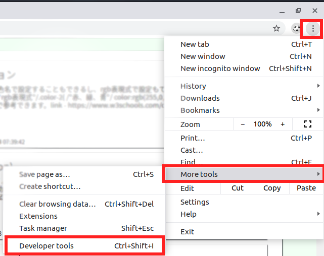

[CSS] ブラウザから開発する方法 (developer mode)
こんにちは。明月です。
今まで、CSSスタイルに関して説明しました。CSSスタイルはセレクトからデザインスタイル、トランジションなど様々な機能がありますね。
HTML編集ツールもあるし、他のプログラム言語はIDEや開発ツールがありますが、CSSの場合はないかと疑問になりますね。
CSSの開発は全てウェブアプリケーションで画面の領域です。CSSことでサーバサイドの開発はないですね。
画面なので、普通はブラウザにCSSの編集や開発ツールがありますね。

クロームの基準で「設定」の「その他」の「開発ツール」があります。上のイメージはクロームですが、全てのブラウザがその開発ツールの機能を持っているはずです。
ショットキーでは「ctrl+s方法hift+i」です。
開発ツールを起動すると下記のイメージみたいなタブが出ます。
上の「Elements」、「Console」、「Sources」などのサブタブがありますが、「Elements」以外はほとんどJavasciprtと関係があるものなので、ここでは省略します。
「Elements」タグでみるとウェブサイトのタグ構成が見えます。
「Elements」のタブの下を見るとスタイルというタブでCSSスタイルがありますね。
それで使用方法は下記通りです。

開発ツールの右上をクリックして確認した要素を選択します。
選択すると開発ツールの下の部分でCSSスタイルがでます。

様々のスタイルの設定を試すことができますね。今までCSSのスタイルや値について説明しましたが、実は開発ツールを利用すると別に全て覚えてスタイル作成する必要はないですね。
ただ、概念だけ知っていれば開発ができます。
でも、ブラウザで設定して画面でスタイルが反映することみても実際のソースには反映されないので、気をつけてください。
そのツールを見れば、「-webkit-」がつけているCSSスタイルがあります。
CSSを設定してファイアフォックスやオペラ、IE、クロームを同じページを見ればスタイルが微妙に違います。
その時に上の接頭辞でブラウザ別で設定できます。
| 接頭辞 | 説明 |
|---|---|
| -webkit- | クローム、サパーリブラウザ |
| -moz- | ファイアフォックスブラウザ |
| -ms- | IEブラウザ |
| -o- | オペラブラウザ |
<html>
<head></head>
<body>
<style>
.browser-test {
background: -webkit-linear-gradient(left, red , blue);
background: -moz-linear-gradient(right, red, blue);
}
</style>
<div class="browser-test">hello world</div>
</body>
</html>
これはクロームで実行した結果です。

これはファイアフォックスで実行した結果です。
クロームでは右から左に赤から青に設定しましたが、ファイアフォックスは左から右側になりますね。
- [CSS] ブラウザから開発する方法 (developer mode)2019/12/25 07:54:31
- [CSS] 色スタイル、グラデーション2019/12/24 07:37:22
- [CSS] アニメーション (animation)2019/12/20 20:51:38
- [CSS] トランスフォーム (transform)2019/12/19 13:00:26
- [CSS] トランジション(transition)2019/12/18 20:33:57
- [CSS] Columnスタイル2019/12/17 19:52:56
- [CSS] 整列スタイル (float)2019/12/17 00:08:54
- [CSS] 位置(position),表示(display)スタイル2019/12/13 20:08:50
- [CSS] border(枠)、余白スタイル - border, margin, padding2019/12/12 20:16:43
- [CSS] 文字スタイル2019/12/11 21:13:22
- [CSS] その他の疑似選択子 - link, visited, target, enabled, disabled, not, active, hover, focus2019/12/10 07:31:28
- [CSS] 疑似要素選択子 - fist-line, first-letter, before, after2019/12/09 07:28:27
- [CSS] 範囲と指定に関する選択子(全体選択子、要素選択子、孫選択子、子選択子、隣接選択子)2019/12/06 07:27:36
- [CSS] 疑似クラス - only-child, only-of-type, empty, empty, root2019/12/05 07:29:15
- [CSS] 疑似クラス - first-child, last-child, first-of-type, last-of-type2019/12/04 07:28:37
- [PHP] Reflection - Method編2020/01/31 03:00:00
- [PHP] Reflection - Class編2020/01/30 03:00:00
- [PHP] エラーページ処理方法(追加: ob_cleanとdie関数使用方法)2020/01/29 03:00:00
- [PHP] 分散設定ファイル(.htaccess) 使用方法2020/01/28 03:00:00
- [PHP] データベース(mariaDB)を連結して使う方法2020/01/24 03:00:00
- [PHP] IOに関して2020/01/23 03:00:00
- [PHP] requireとinclude、そして「@」の使用方法2020/01/22 03:00:00
- [PHP] Fatal及びNotice,、Warningメッセージ処理する方法2020/01/19 03:00:00
- [PHP] xDebug設定する方法2020/01/18 03:00:00
- [PHP] $_SERVER, $GLOBALS, $_GET, $_POST, $_REQUEST, $_COOKIE, $_SESSION, $_FILES, $_ENV(getenv())2020/01/17 03:00:00
- [PHP] データ確認関数(var_dump, debug_zval_dump, print_r)2020/01/16 03:00:00
- [PHP] 例外処理(try ~ catch ~ finally)2020/01/15 03:00:00
- [PHP] 配列とリスト(list)2020/01/14 03:00:00
- [PHP] インタフェースと抽象クラス、クラス継承、parent、this2020/01/13 03:00:00
- [PHP] functionとclass使用方法、アクセス修飾子、そしてstatic2020/01/09 23:35:27